L'activité pendant loisirs:
Faire Du Jogging
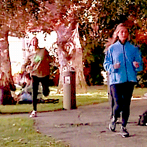
Le jogging ou footing est un terme emprunté à l'anglais. Ce terme désigne une activité physique, également appelée course à pied, consistant à courir dans un but sportif, sur une certaine distance et à un certain rythme. Le terme francisé « joggeur » désigne la personne pratiquant cette activité.
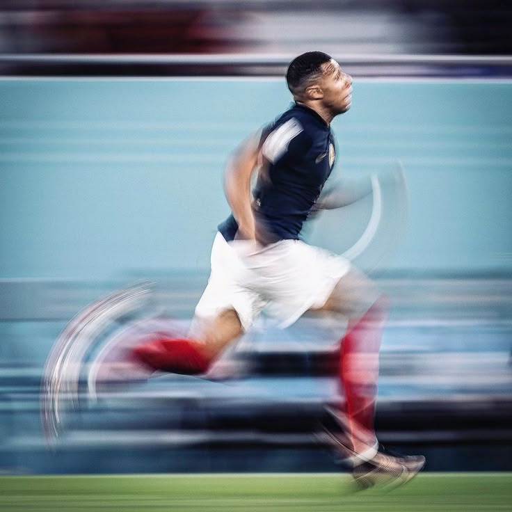
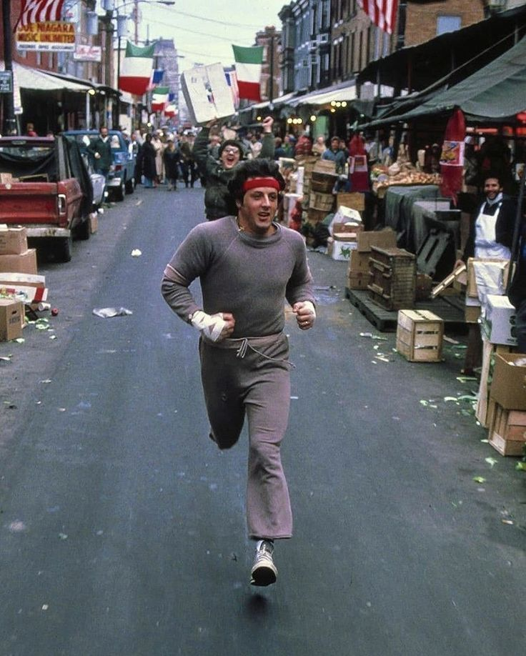
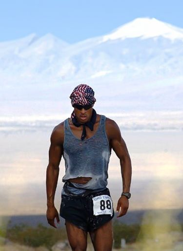 |
David Goggins, né le 17 février 1975 à Buffalo, dans l'État de New York, (États-Unis), est un ancien membre de la Navy SEAL Team 5 et il est le seul membre des forces armées américaines à avoir suivi et réussi la formation des Navy SEAL, l'école des Rangers de l'U.S Army et la formation de contrôleur aérien tactique de l'Air Force. Il a aussi participé à plusieurs opérations durant la guerre d'Irak.
Il est également un athlète de haut niveau dans plusieurs disciplines. Il a notamment participé à plus de 60 ultra-marathons, triathlons et ultra-triathlons, en établissant de nouveaux records régulièrement.. |
"Stay Hard" |
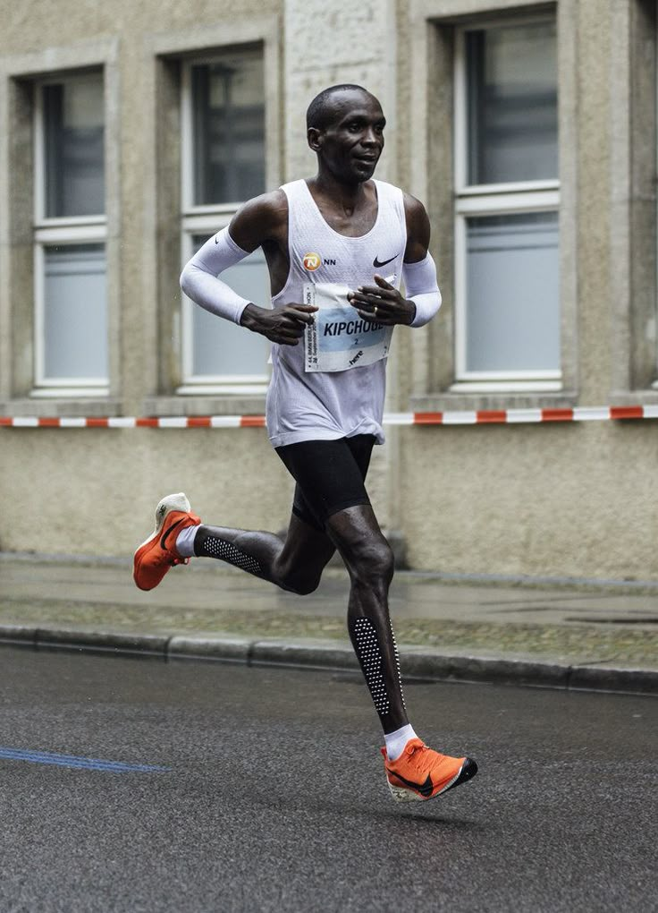 |
Eliud Kipchoge, né le 5 novembre 1984 à Kapsisiywa, est un athlète kényan spécialiste des courses de fond.
Double champion olympique du marathon, aux Jeux de Rio 2016 et aux Jeux de Tokyo 2020, il établit le 25 septembre 2022 à Berlin un nouveau record de monde de la distance en 2 h 1 min 9 s, battant son propre record du 16 septembre 2018 en 2 h 1 min 39 s. |
"No Human Is Limited" |
IG de David Goggins:Click This
IG de Eliud Kipchoge:Click This
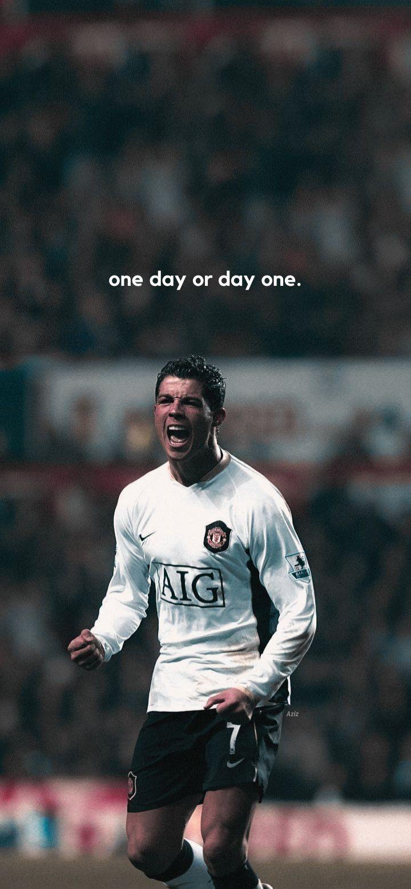 |
|
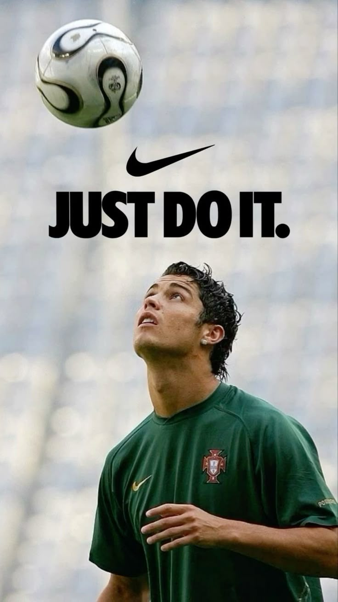 |
|
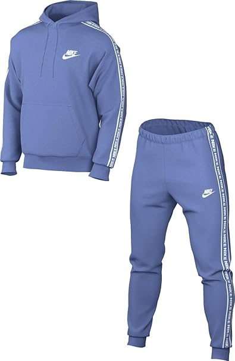 |
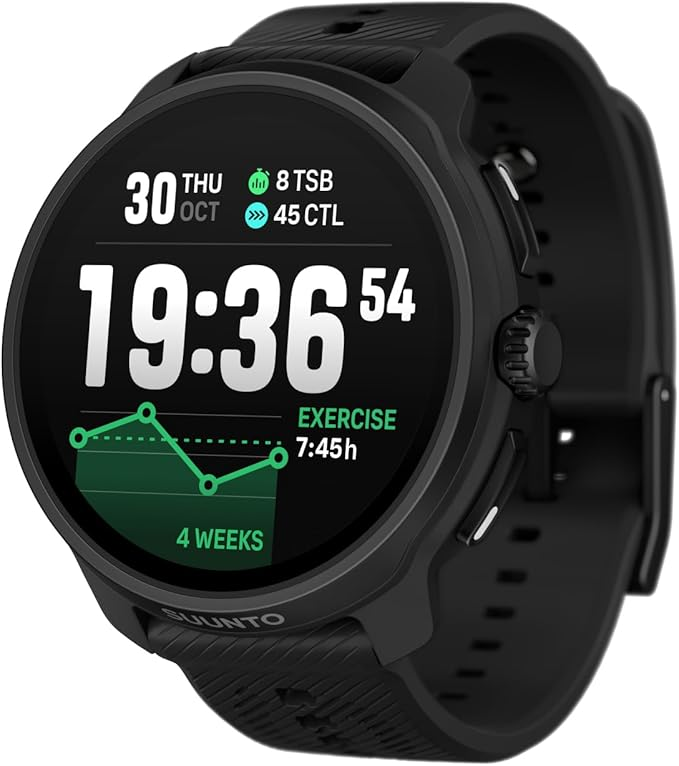 |
Nike Men's combination |
SUUNTO Race 2 Men's Women's Sports Watch |
|
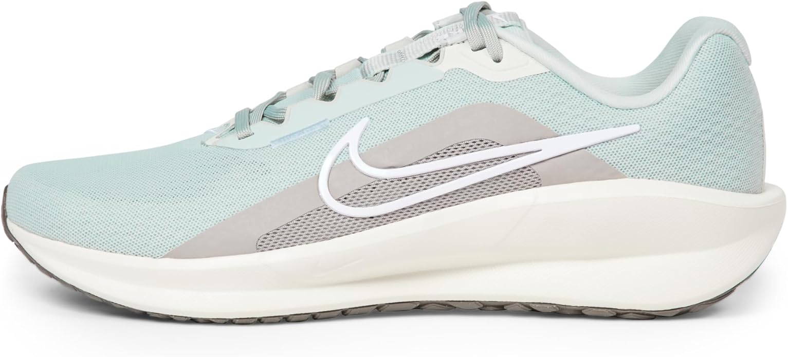 |
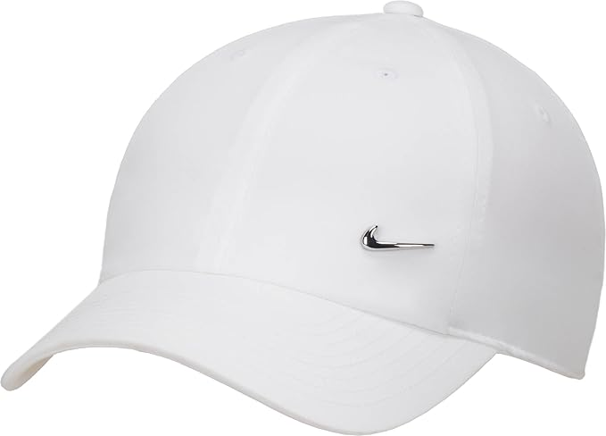 |
Nike Downshifter 13 SneakerHomme |
Nike cap Homme |